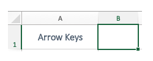
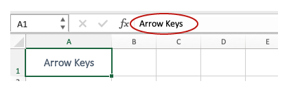
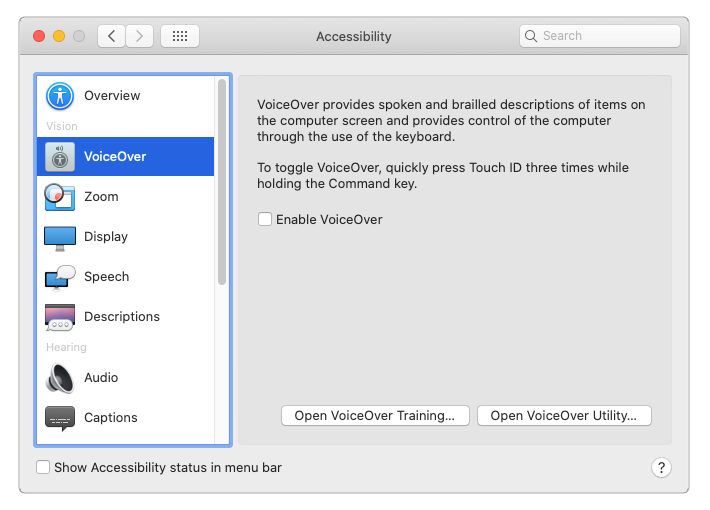

Video
Example File
Guide
Navigating In Excel
Microsoft Excel is used to create spreadsheets laid out in rows and columns—like a big table. Often this data is modified with formulas, and presented in charts or graphs. In the videos to follow, there will be many examples of navigating in Excel with a mouse, so this video will focus on navigating without a mouse.
In newer versions of Excel, Microsoft has added functionality to support enhanced navigation for keyboard and screen reading software users. In this video, I'll demonstrate some methods for interacting with graphic elements in Excel without a mouse, and identify some issues that keyboard and screen reader users may encounter. I'll be demonstrating in Excel 2019 running on a Mac, and I will point out any differences for Windows users.
Objectives
- Gain a high-level understanding of how a user can navigate in Excel without a mouse.
- Name three types of graphic elements that can be added to Excel.
Navigating with the Keyboard
I'll open the "Navigating with Excel" example file. When I click on a cell with a mouse, a bounding box appears, indicating that this cell is selected:

In Excel, this is known as an "active" cell. Some keyboard users say that a cell "has focus" when it is active, and refer to the bounding box as a "focus indicator". My focus indicator is currently on cell A1. Because this cell has keyboard focus, the text value of this cell—"Arrow Keys"—is displayed in the Formula Bar below the Ribbon:

Arrow Keys
I'll use the keyboard to move up, down, left & right between cells in rows and columns. As I move from one cell to the next, the focus indicator shows which cell is active.
 To move the next content area, or Sheet, use the keyboard shortcut Option + Right arrow keys.
To move the next content area, or Sheet, use the keyboard shortcut Option + Right arrow keys.To go to the next content area, or "Sheet", I'll use Option + Right arrow key. This sheet has three tables and three charts. Moving from left to right, I'll refer to these tables as Table 1, Table 2, and Table 3, and to the charts below them as Chart 1, Chart 2, and Chart 3. I'll use the arrow keys to navigate into and around Table 1. Next, I'll use the down arrow to navigate off Table 1, towards Chart 1. My focus indicator passes right under the chart.
Floating elements navigation
In Excel, graphic elements such as Charts, Shapes, and Images are called "floating elements" because they are not associated with a specific cell, or group of cells. The three charts in this example "float" above empty cells, and cannot be reached using the arrow keys.
To navigate between floating elements on Mac (and Windows):
-
Use the keyboard shortcut Control + Alt + 5.
-
Use the Tab key to cycle between floating elements.
-
Use the Esc key to return to normal navigation.
When I enable floating element navigation, Chart 2 receives focus. Keyboard users expect the navigation order of elements to match the visual order of the elements on the page: from top to bottom, and left to right, in most cases. As I continue to navigate the floating elements, Chart 3 receives focus, and then Chart 1.
The navigation order of floating elements is determined by the order in which the elements were added to the sheet.
In this example, I created Chart 2 first, and then added Chart 3 and Chart 1. At this time, there is no user interface in Excel to correct the navigation order when it is out-of-synch with the visual order of floating elements.
Navigating with Screen Reading Software
Next, I'll demonstrate how a user can interact with a floating element using the screen reading software VoiceOver, which is built into the Mac operating system:

I'll use VoiceOver to interact with Chart 1, a pie chart created from the "Pets in the U.S. in 2019" data in Table 1. VoiceOver will read the chart's:
- Title
- Values for each "piece" of the pie chart
- Legend
Pay particular attention to how the Legend is read.
[VoiceOver reads]
- Chart Area, Chart Element
- Pets in the U.S., 2019
- Plot Area, Chart Element
- Series "Pets in the U.S., 2019", Chart Element
- Series "Pets in the U.S., 2019" Point "Fish"
- Value: 15,000,000 (10%), Chart Element
- Series "Pets in the U.S., 2019" Point "Others"
- Value: 21,900,000 (15%), Chart Element
- Series "Pets in the U.S., 2019" Point "Dogs"
- Value: 60,200,000 (42%), Chart Element
- Series "Pets in the U.S., 2019" Point "Cats"
- Value: 47,100,000 (33%), Chart Element
- Series "Pets in the U.S., 2019" Point "Fish"
- Series "Pets in the U.S., 2019", Chart Element
- Legend, Chart Element
- Legend Entry 1, Chart Element
- Legend Entry 2, Chart Element
- Legend Entry 3, Chart Element
- Legend Entry 4, Chart Element
[narrator resumes]
When VoiceOver read the labels in the legend—a default element of a pie chart, instead of reading the categories of pets listed in the data table—dogs, cats, fish, and others—it read generic labels—Entry 1, Entry 2, Entry 3, and Entry 4. When a screen reader user navigates to a readable text element, the information must be equivalent to the visible text.
Navigating & Reading Order in Excel
At the current time, there is no interface in Excel that allows a user to view and repair the navigation and reading order of graphic elements. As a result, these issues are not addressed in this training. Issues that have been revealed through our testing—such as the generic legend labels that are presented to screen reading users interacting with a pie chart—will be identified in subsequent videos.
In the next video I'll review best practices for Excel Sheets and Tables.